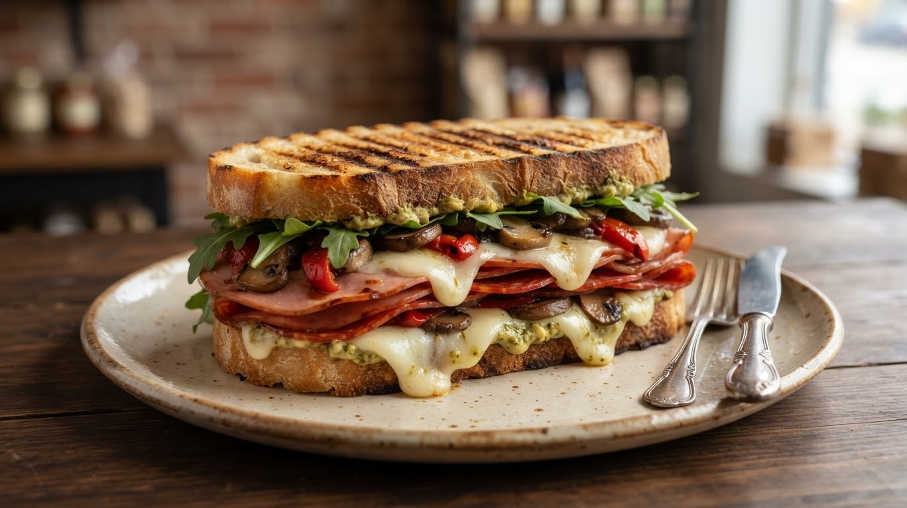
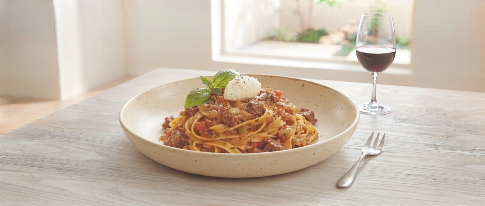
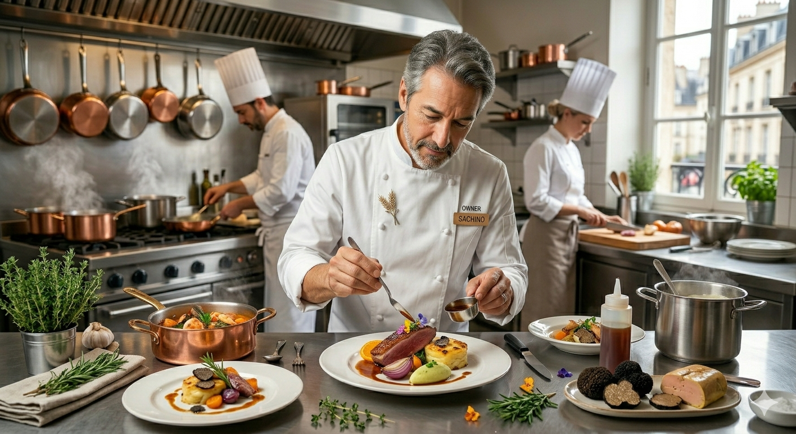

il compleanno
盛岡・内丸で出会う、
“生きたワイン”と季節のイタリアン食堂
日曜限定
特別なサンドイッチ
SCROLL

素材から向き合い、料理人目線で仕入れる本格小料理。
地産地消にこだわり、その時一番美味しいものを。
il compleannoが紡ぐ、特別な時間と空気感をお届けします。
16-16
Uchimaru, Morioka
019-625-5351
Shop Phone

かしこまりすぎない、
でも妥協のない本物の味を。
岩手県盛岡市、内丸。夫婦で営むこの場所は、常連さんも、ふらりと立ち寄った一見さんも、誰もが同じように温かい時間を過ごせる場所です。
特別な日だけではなく、日常のふとした瞬間に思い出していただけるような、そんな“街の食堂”でありたいと考えています。
Our Strength
日曜日に開いている、美味しいお店が見つからない時。
ワインを学びたいけれど、敷居の高さを感じている時。
お家でも、プロの味を愉しみたい時。
il compleannoは
そんなあなたの
「間違いない」場所になります。
「素敵なご夫婦の可愛いお店♡ 選んで頂いたワインもお惣菜やサンドイッチもどれも美味しくてお気に入りのお店になりました！ 初心者でも歓迎してくれて嬉しかったです」
「日曜日、近くの飲食店が軒並み定休日となっておりフラフラ歩いていたら開いていました。日曜限定のサンドイッチや、種類豊富なサラダ等が並んでいました。店員さんも話しかけやすい雰囲気でした。」
「あったらいいな」を形に。新しいおうちディナーの提案です。
「どの惣菜にどのワインを合わせたらいい？」そんなお悩みを解決！
店頭のショーケースやワインコーナーに、相性抜群の組み合わせをひと目で学べる「おすすめペアリングPOP」を順次掲示いたします。
※店頭POPおよびInstagramの投稿にて、毎月のおすすめペアリングをご紹介予定です。お楽しみに！